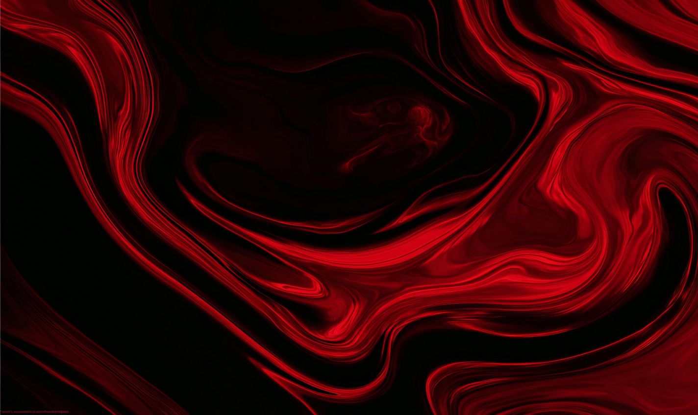
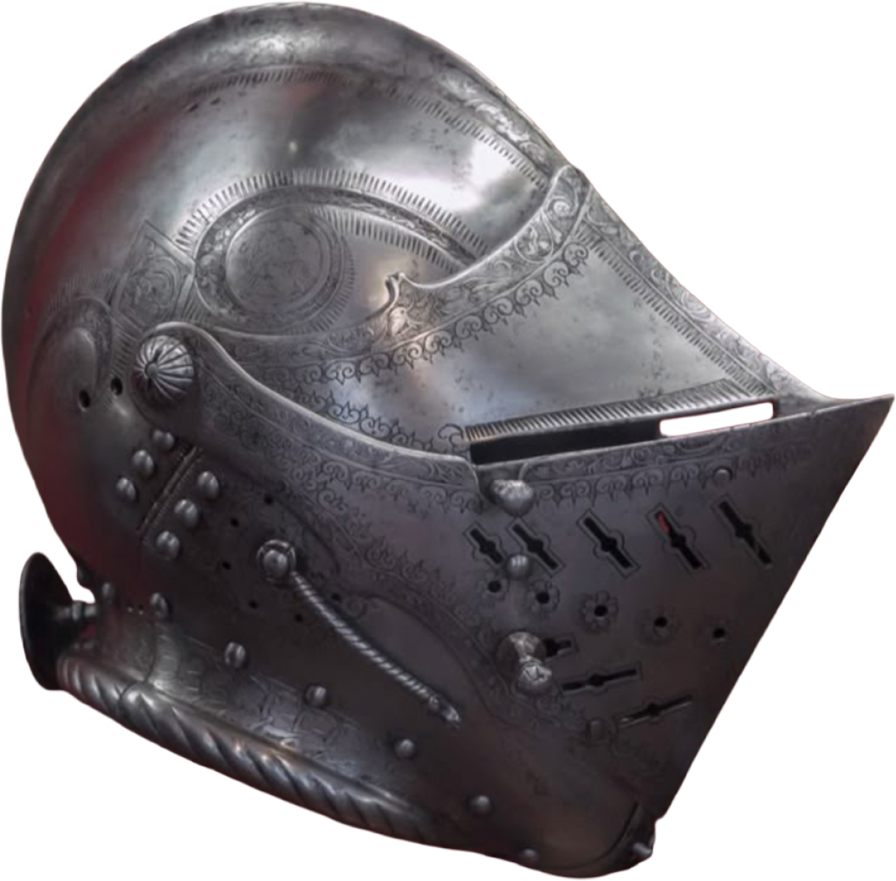
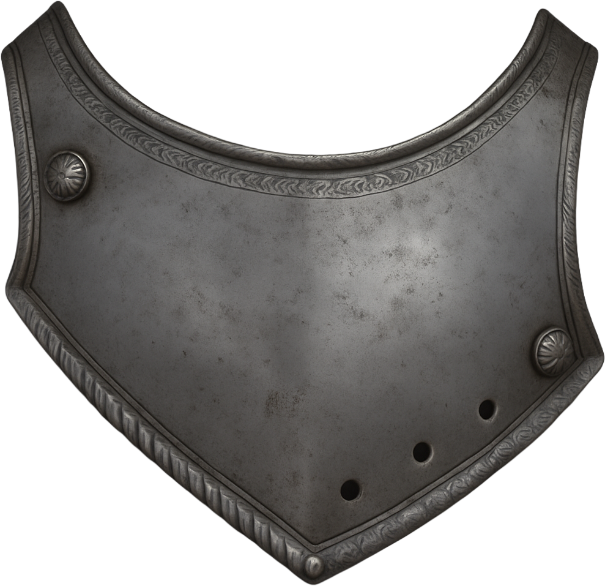
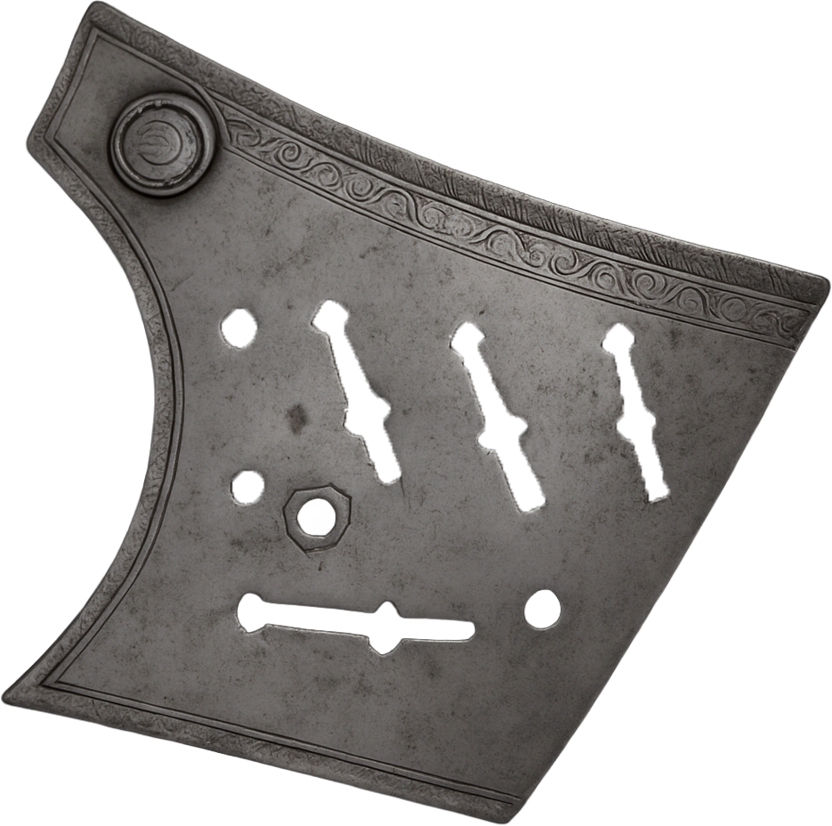
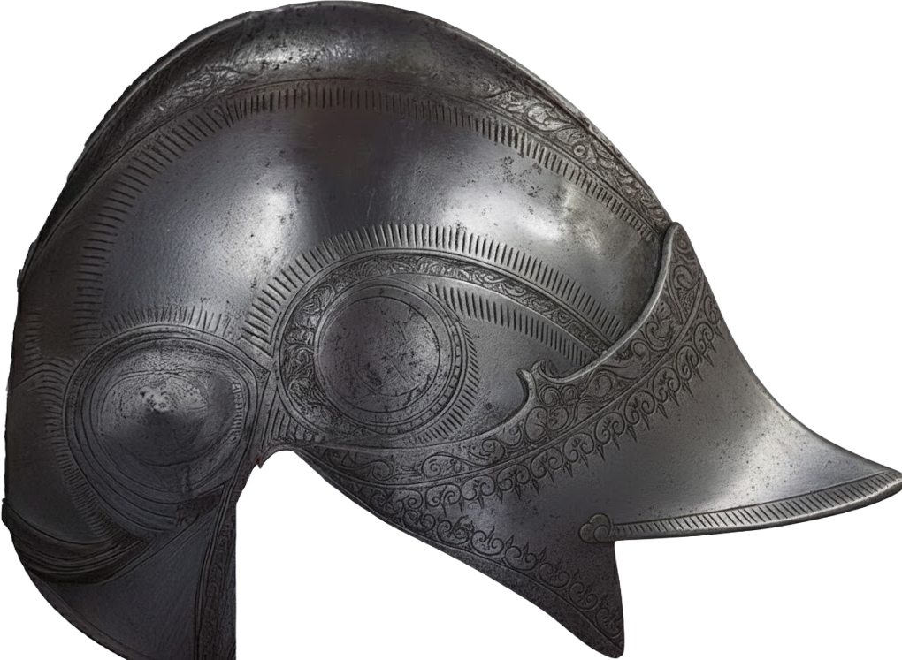

MEDIEAVAL CLOSE HELMET
#MEDIEAVAL
#1700S
#ARMOR
#KNIGHT
ARMET
HKNU
ARMET
17세기 최고의 예술품 투구
1750’s
이 시기는 전쟁 기술과 금속 공예가 함께 발전하던 시대였다. 투구는 단순한 방어구를 넘어, 장인의 정교한 조각과 문양으로 전사의 신분과 권위를 드러내는 예술품이 되었다.
STEEL
강철은 투구 제작의 핵심 재료로, 묵직하지만 단단한 내구성을 자랑했다. 칼날과 화살을 견디며 머리를 보호했고, 세밀한 조각을 새길 수 있을 만큼 가공성이 뛰어났다.
WAR
전쟁터에서 투구는 생존의 필수 장비이자, 두려움을 이겨내는 용기의 상징이었다. 빛나는 금속 표면은 적에게 위압감을 주었고, 전사는 이 투구를 쓰고 자신의 신념을 지켰다.
HONOR
투구의 장식과 형태는 전사의 명예를 나타내는 표식이었다. 전투에서 흠집 하나하나는 그가 살아온 싸움의 흔적이자, 용맹과 충성의 증거로 남았다.
ARMET
 
이 투구의 둥근 형태는 타격을 흘려보내기 위한 곡면 설계입니다. 둥글게 만든 이유는 칼날이나 창끝이 미끄러지도록 유도해 충격을 분산시키고, 머리를 보호하는 방어 효과를 극대화하기 위해서입니다.
투구의 닫힌 구조는 보호와 위엄을 동시에 상징합니다. 얼굴을 가려 감정을 숨기고, 시야를 제한해 집중을 높이며, 장식을 통해 신분과 권위를 드러냅니다. 침묵 속의 힘을 표현하는 장치입니다.
CLOSED & ROUND
부품

상부 본체는 머리를 감싸는 둥근 구조로, 유려한 곡선과 정교한 문양이 특징이다. 투구의 형태를 결정하며 충격을 흡수하는 중심 역할을 한다.
+

전면 보호판은 얼굴을 덮는 부품으로, 뾰족한 턱선과 중앙의 돌출부가 강한 인상을 만든다. 리벳 장식이 구조적 견고함을 더한다.
+

하단 결합판은 내부를 고정하는 부품으로, 슬롯과 구멍을 통해 다른 파츠를 연결한다. 가장자리의 세밀한 문양이 기능성과 장식을 함께 드러낸다.
top